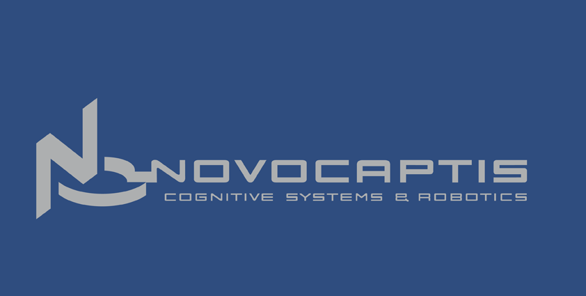

    <div class="row">
    <div class="col-md-12 column">
    <h3>The project could not have taken place without the collaboration with the following companies:</h3>
<h1></h1>
<h1></h1>
		  <div class="col-lg-3">
		    <div class="thumbnail">
		      
		      <h3>CERN</h3>
		      <p>is the European Organization for Nuclear Research, where high energy physics experiments take place. 
		      ATWSS was developed partially at CERN.</p><br>
		      <a href="http://www.cern.ch">www.cern.ch</a>
		    </div>
		  </div>

		  <div class="col-lg-3">
		    <div class="thumbnail">
		      
		      <h3>ATLAS</h3>
		      <p>is one of the four experiments on the Large Hadron Collider (LHC). In ATLAS
		      we use ATWSS to record intreventions needed in the cavern.</p><br>
		      <a href="http://cern.ch/atlas">cern.ch/atlas</a>
		    </div>
		  </div>

		  <div class="col-lg-3">
		    <div class="thumbnail">
		      
		      <h3>Novocaptis</h3>
		      <p>built the camera system as well as all the video handling in hardware and software.</p><br>
		      <a href="http://www.novocaptis.com">www.novocaptis.com</a>
		    </div>
		  </div>

		  <div class="col-lg-3">
		    <div class="thumbnail">
		      
		      <h3>Prisma</h3>
		      <p>build the PTU unit and the software for all the measurements.</p><br>
		      <a href="http://www.prismaelectronics.eu">www.prismaelectronics.eu</a>
		    </div>
		  </div>
  </div>
  </div>